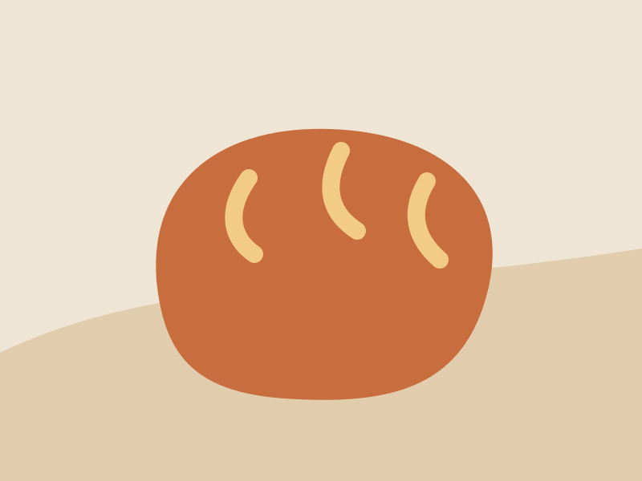
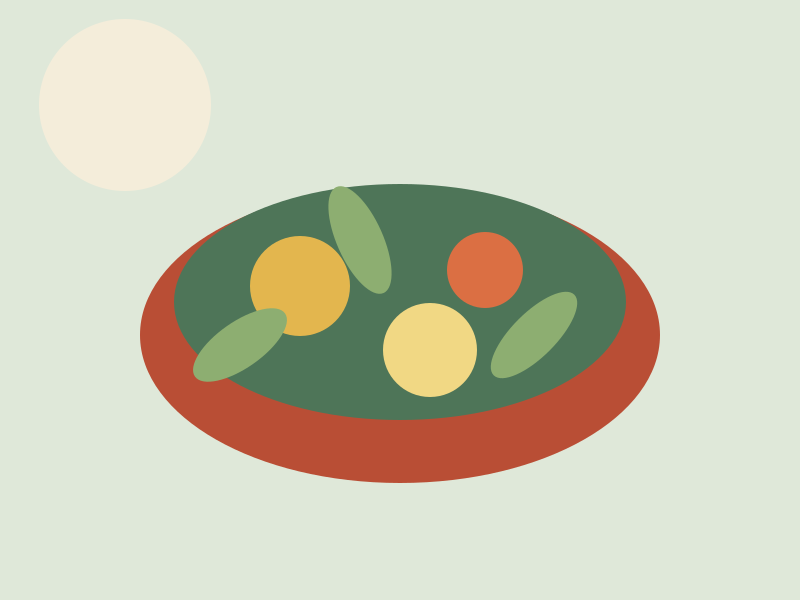
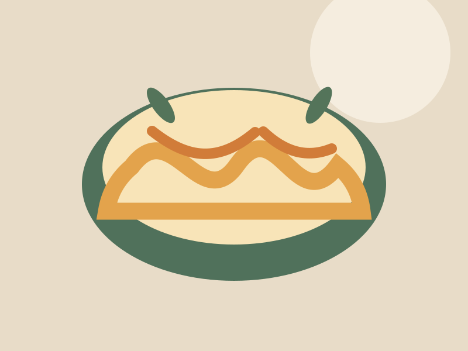

Home / Stories
the recipe journal
Stories with
something to say.
Kitchen notes, generous ideas, and the little rituals that make food feel like home.
featured story
The long way around the loaf.
On patience, good butter, and why the best recipes leave a little room for the day you’re having.
Read the story →
from our cooks
Share your
story →
More to linger over

seasonal
What to do with a very good tomato
Three quiet ways to let the best ingredient in the room do the talking.

small rituals
A sauce is a mood, too
The difference between following a recipe and listening to it.
community
Notes from a shared table
What our cooks bring when they bring a little more than dinner.